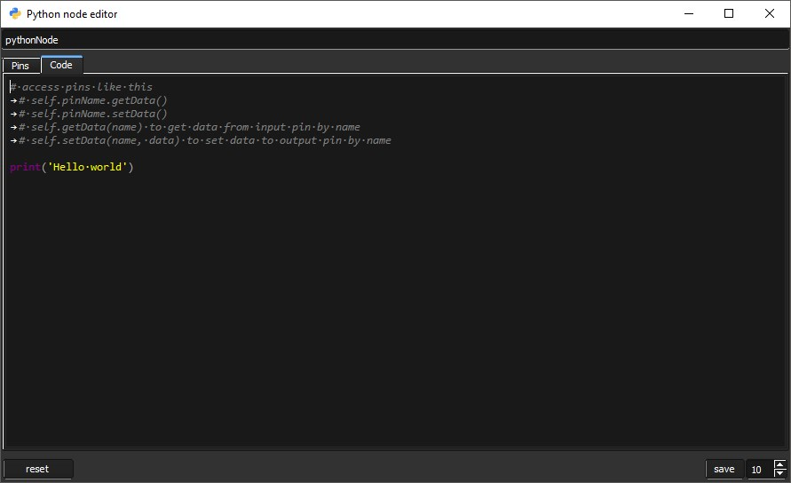

The code editor is a widget for pythonNode To open it, create pythonNode first, then right click on it and click 'edit'. More...
Classes | |
| class | PyFlow.Core.CodeEditor.WCompletionTextEdit |
| class | PyFlow.Core.CodeEditor.WPinWidget |
| class | PyFlow.Core.CodeEditor.WCodeEditor |
| Used to write code into pythonNode. More... | |
Detailed Description
The code editor is a widget for pythonNode To open it, create pythonNode first, then right click on it and click 'edit'.
Code editor will pop up.

The editor is divided into two parts.
The first part is a place where you will define and sort pins. To sort pins, simply drag
them as you would like them to be located on the node.
- node name
- create new input button. To the right there is a button for output pin creation also.
- remove selected pins
- pin widget. Here you can specify pin name and data type, as well as label visibility.
- spin box to change editor font size
- reset ui to defaults
- apply to node. This button will populate node with data from code editor ui.

The second part is actually the text editor. Here you can read/write pins data, import python modules and use them in calculationis.
When save button is pressed, function with code you wrote will be generated and used as node's compute method.
Examples
# you can acess pins in two ways
# like so
>>> self.pinName.getData()
>>> self.pinName.setData(value)
# or like so
>>> self.getData('pinName')
>>> self.setData('pinName', value)
# this code
>>> import math
>>> print(math.pi)
# will be turned into the following
>>> def compute(self):
>>> import math
>>> print(math.pi)
# and then used inside the node